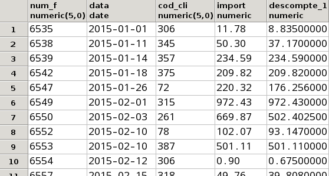
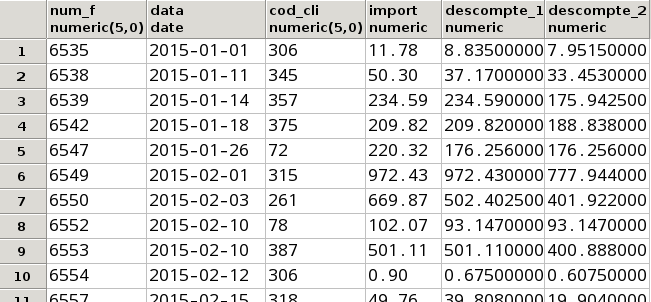

Exercicis de tot el tema, amb els resultats
6.51 Traure el nom dels clients amb el número de factura i la data (individuals, sense agrupar res) que té cada client. Trau el resultat ordenat per client, i dins d'aquest per data de la factura

Un total de 105 files
6.52 Traure el nom del soci, amb el codi i la descripció de cada article que ha demanat. Ordena per nom del soci i codi de l'article.
Un total de 541 files
6.53 Modificar l'anterior per a que no es repetesquen els resultats.

Un total de 532 files
Observa com ara no es repeteix la fila 10 i 11, i abans sí
6.54 Traure el nom dels clients amb la quantitat de factures que tenen, ordenades per aquest número de major a menor

Un total de 40 files
6.55 Traure el número de factura, data, codi de client, total de la factura (amb l'àlies IMPORT) i total de la factura aplicant descomptes d'article (amb àlies DESCOMPTE_1), com en la consulta 6.33, però sense el límit de les 10 línies de factura. Ordena per número de factura.

Un total de 105 files
6.56 Modificar l'anterior per a aplicar també el descompte de la factura (amb l'àlies DESCOMPTE_2)

Un total de 105 files
6.57 Traure el codi i nom d'aquells venedors que supervisen algú (consten com a cap). Traure també el número de supervisats de cadascun d'aquestos supervisors.
6.58 Traure el codi i descripció dels articles juntament amb el número de vegades que s'ha venut, el total d'unitats venudes i la mitjana d'unitats venudes per factura. Ordenar pel número total d'unitats venudes de forma descendent, i dins d'aquesta per codi d'article de forma ascendent.
Un total de 399 files
6.59 Traure el codi i la descripció de les categories, amb la quantitat d'articles venuts de cada categoria, d'aquelles categories de les quals se n'han venut més de 100 unitats. Ordenar per aquest número de forma descendent.

6.60 Traure el codi i el nom dels clients que no tenen cap factura.

6.61 Traure el codi, descripció i total d'unitats venudes de tots els articles, fins i tot d'aquells que no s'ha venut res.
Nota
Per a deixar-lo més bonic, com que la suma de valors nuls no és 0 sinó nul, per a que ens aparegue el valor 0 podem utilitzar la funció COALESCE(valor,0), que si el valor és nul torna un 0.

Un total de 812 files
6.62 Traure el nom de tots els pobles i el número de clients en cas que en tinguen. Ordena per número de clients de forma descendent.
Un total de 1663 files
6.63 Traure el codi i la descripció de les categories, amb el número d'articles de cada categoria i el número total d'unitats venudes de cada categoria, d'aquelles categories de les quals tenim més de 15 articles, i ordenat per número d'articles de forma descendent. Aquesta sentència ja és prou complicada. Concretament haureu de tenir en compte que:
- Voldrem traure el número d'articles de cada categoria, però potser alguns articles no s'han venut, i per tant no apareixeran en la taula LINIA_FAC.
- I també tenim el problema que, com ens fa falta la taula LINIA_FAC, un article venut en més d'una factura apareixerà més d'una vegada. Si comptem de forma normal, el comptaríem més d'una vegada cada article. Per tant voldrem comptar els diferents articles de cada categoria.
6.64 Traure el número màxim de factures fetes a un client
6.65 Traure el l'import que suposa la factura més cara i l'import que suposa la més barata (sense considerar ni descomptes ni IVA)
6.66 Traure el número de factures més alt que s'ha venut per venedor en cada trimestre (no traurem qui és el venedor, que seria encara més complicat). Per a poder agrupar per trimestre, ens farà falta la funció TO_CHAR(data,'Q'), que trau el número de trimestre. El pas previ és calcular el número de factures de cada venedor i en cada trimestre. Després, amb la informació anterior, voldrem calcular el màxim de cada trimestre.
6.67 Traure els articles més cars que la mitjana. Tragueu-los ordenats per la categoria, i després per codi d'article.

Un total de 164 files
6.68 Modificar l'anterior per a traure els articles més cars que la mitjana de la seua categoria. Tragueu-los ordenats per la categoria
Un total de 75 files
És un resultat molt similar a l'anterior, però observeu que ara no estan els productes de les files 5, 14, 15, ...
6.69 Traure els pobles on tenim clients però no tenim venedors. Ha de ser per mig de subconsultes (en plural). Ordeneu per codi del poble.

6.70 Traure els pobles on tenim més venedors que clients. Traure el codi del poble, el nom i el número de venedors. Ordena per nom del poble.

6.71 Traure l'import de la factura més cara de cada trimestre. La informació prèvia és la factura amb la data i l'import. A partir d'ahí haurem de calcular el màxim de l'import per a cada trimestre (no caldrà traure quina factura és).

6.72 Traure el nom del venedor, el número de factures que ha venut i el percentatge que suposa sobre el total. Podria ser que en el moment de calcular el percentatge, el número resultant s'haja de convertir a numèric per a que dóne bé el resultat, ja que en fer una operació amb enters, el resultat serà enter. Aleshores hauríem d'obligar a que el número tinga decimals (::NUMERIC). I la funció d'arrodonir és ROUND. Ordeneu pel nom.

6.73 Traure tota la informació (amb l'import) de la factura més cara. Ha de ser per mig de subconsultes. Mireu que segurament hi haurà 2 subconsultes. En la més interna calculem l'import de les factures. En l'altra calculem el màxim. I en la consulta principal, busquem la factura que coincideix amb aquest màxim.

6.74 (voluntari) Obtenir el venedor que ha venut més unitats de cada categoria, sense considerar en la categoria el valor nul. Aquesta consulta la podríem considerar ja com molt avançada.

6.75 Traure el nom de tots els clients i venedors implicats en alguna venda del primer trimestre de 2015. Intentar traure en una segona columna el text Venedor per als venedors, i Client per als clients. Ordenat pel nom.

6.76a Traure per mig de sentències d'operacions de conjunts els pobles on tenim algun venedor o algun client. No volem resultats repetits, i ho volem ordenat pel nom del poble.
Un total de 31 files
6.76b Modificar l'anterior per a traure els pobles on tenim al mateix temps venedors i clients

6.76c Modificar l'anterior per a traure els pobles on tenim venedors però no tenim clients

Llicenciat sota la Llicència Creative Commons Reconeixement NoComercial SenseObraDerivada 2.5